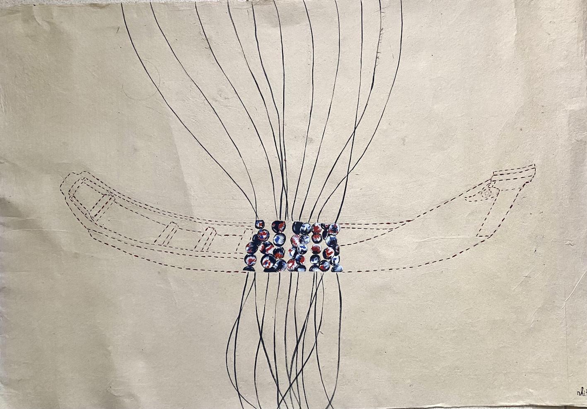
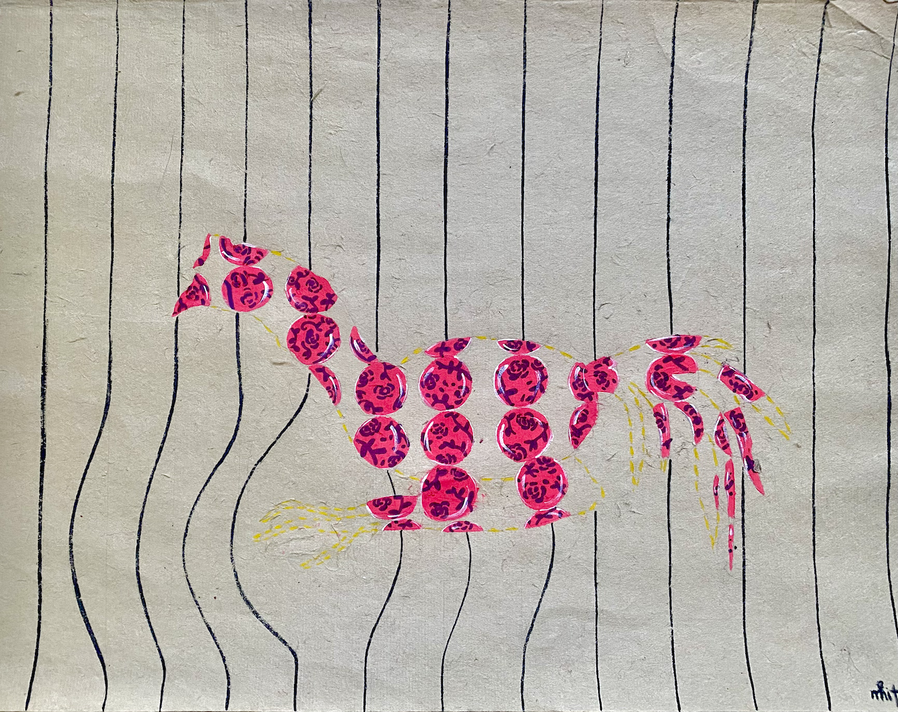
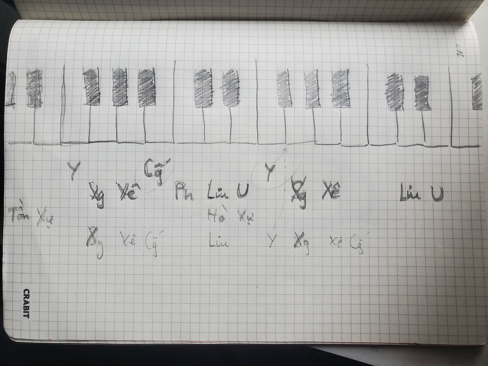
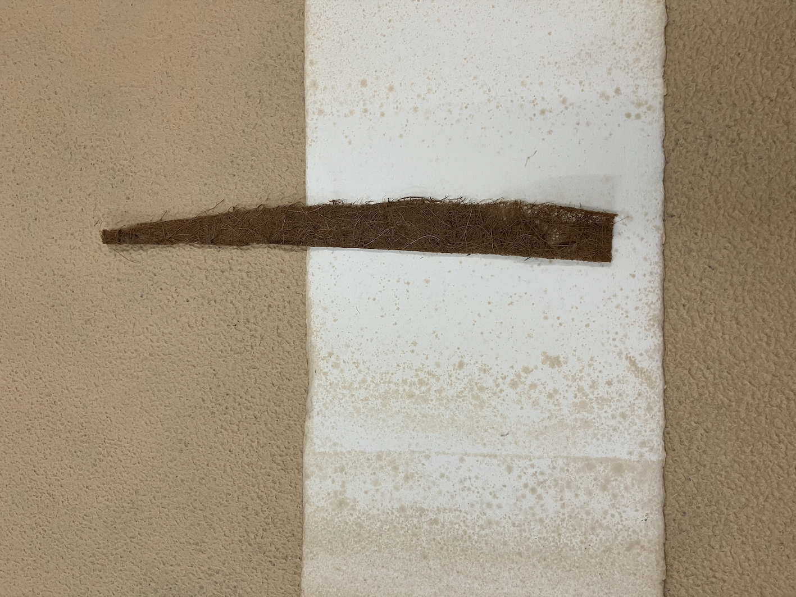
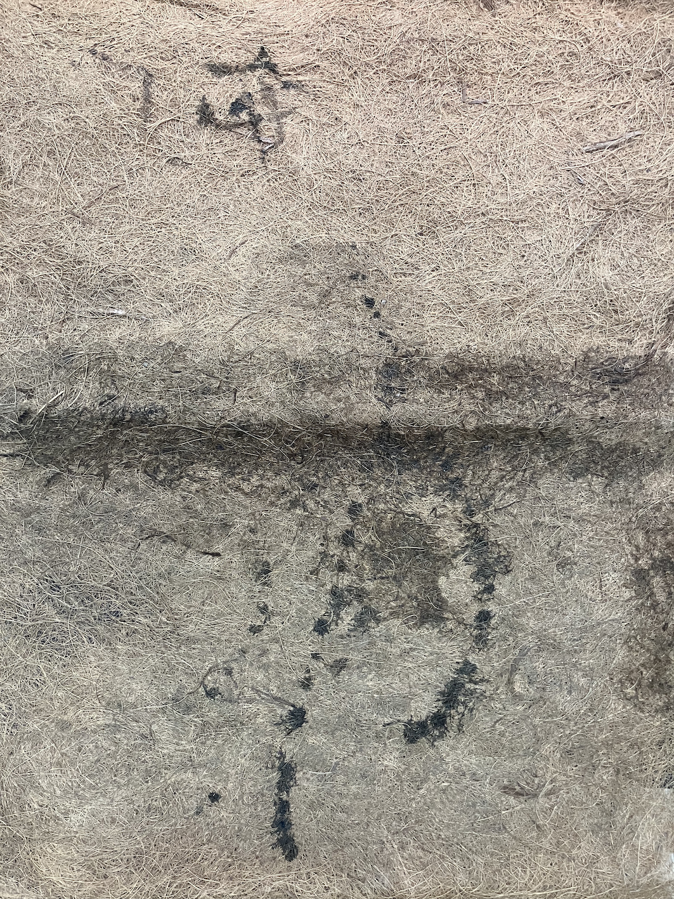

ánh sáng - nước - không gian
Chúng tôi đến vào mùa nắng,
ánh sáng hắt dài trên dòng sông lập loè trong không khí oi bức.
Ánh sáng chiều di chuyển theo chuyển động của con nước —
không biết ánh sáng sẽ bò lên bờ hay lùi lại theo dòng.
Ánh sáng trong rừng mùa khô,
không thấy bóng dáng của một con chim nào cả.
Trong miếu,
ánh sáng tạt dài vào không gian lặng lẽ,
chiếu qua các song cửa kéo và trải lên mái ngói.
Hướng nhìn của Bà chúa Xứ ra mặt sông,
những lấp lánh hắt lên từ dòng kênh do những con sóng lăn tăn tạo nên.
Nước mấp mé cầu phao, có khi lên cao tới gối
và che luôn con đường xuống phà.
Nhà nghỉ ở Giồng Trôm, ngang qua một con lạch nhỏ.
ánh sáng nghiêng chiếu vào vách nhà và lá dừa nước, cây bần,
đổ lên tường những khoảng bóng tròn mờ.
Có vài lần lên trời ngắm sao về đêm,
nhưng trời vẫn không đủ tối để thấy được sao.
ánh sáng hắt dài trên dòng sông lập loè trong không khí oi bức.
Ánh sáng chiều di chuyển theo chuyển động của con nước —
không biết ánh sáng sẽ bò lên bờ hay lùi lại theo dòng.
Ánh sáng trong rừng mùa khô,
không thấy bóng dáng của một con chim nào cả.
Trong miếu,
ánh sáng tạt dài vào không gian lặng lẽ,
chiếu qua các song cửa kéo và trải lên mái ngói.
Hướng nhìn của Bà chúa Xứ ra mặt sông,
những lấp lánh hắt lên từ dòng kênh do những con sóng lăn tăn tạo nên.
Nước mấp mé cầu phao, có khi lên cao tới gối
và che luôn con đường xuống phà.
Nhà nghỉ ở Giồng Trôm, ngang qua một con lạch nhỏ.
ánh sáng nghiêng chiếu vào vách nhà và lá dừa nước, cây bần,
đổ lên tường những khoảng bóng tròn mờ.
Có vài lần lên trời ngắm sao về đêm,
nhưng trời vẫn không đủ tối để thấy được sao.
Luu An
Ban đêm, trước mắt tôi
là một màu đen và tấm lưng vuông.
Cây chèo thuyền liên tục biến đổi
nhờ ánh sáng lốm đốm trên hàng dừa non
và một ít ánh đèn mờ nhạt.
là một màu đen và tấm lưng vuông.
Cây chèo thuyền liên tục biến đổi
nhờ ánh sáng lốm đốm trên hàng dừa non
và một ít ánh đèn mờ nhạt.
Châu Nhi
Các đốm sáng đom đóm thoắt ẩn thoắt hiện.
Hầu như buổi đêm tôi không cảm nhận được thực tại.
Có nhiều hơn một sự vật ở trên xuồng,
có thể chứa thêm được chi nữa?
Hầu như buổi đêm tôi không cảm nhận được thực tại.
Có nhiều hơn một sự vật ở trên xuồng,
có thể chứa thêm được chi nữa?
Châu Nhi

Tranh vẽ của Châu Nhi
Cảm giác thiêng liêng
và khơi dậy mắt và cơ thể tôi ngày càng rõ hơn.
Châu Nhi
Một căn nhà văn hóa nằm giữa các xưởng vỏ dừa khô.
Không có ai bên trong,
nhưng tôi cảm nhận đã có người vừa rời đi vào lúc sáng.
Không có ai bên trong,
nhưng tôi cảm nhận đã có người vừa rời đi vào lúc sáng.
Châu Nhi
Ánh nắng buổi sáng tạt xéo vào sào đồ
làm cho đồ có cảm giác sạch và sáng hơn.
Những món đồ lâu ngày không được chọn
gom lại mang đi đốt bỏ —
mùi vải cháy nồng lên một góc trời.
làm cho đồ có cảm giác sạch và sáng hơn.
Những món đồ lâu ngày không được chọn
gom lại mang đi đốt bỏ —
mùi vải cháy nồng lên một góc trời.
Luu An
cơ thể - vật chất
Cây dừa ban đêm tỏa sáng, ban ngày vững chãi,
lại có khi uốn éo.
Nếu biến thành một người đàn ông thật sự,
chắc hẳn anh ta khá nam tính.
lại có khi uốn éo.
Nếu biến thành một người đàn ông thật sự,
chắc hẳn anh ta khá nam tính.
Châu Nhi
Chúng tôi chạy vào những khu vườn sâu đằng sau những rặng dừa nước,
đứng đợi và báo tin.
đứng đợi và báo tin.
Luu An
Tôi chưa thấy được con gà đá nào đủ lâu,
chỉ thấy những ông chú đằng xa đã tháo chạy.
chỉ thấy những ông chú đằng xa đã tháo chạy.
Châu Nhi

Tranh vẽ của Châu Nhi
Một nắm lá dứa, thảo quả sao vàng, ngò rí,
mía lau chẻ nhỏ, râu bắp, cỏ tranh lẻ bạn —
those are the recipe of a lòng bàn tay dễ chịu.
Hít vào.
Cà phê sáng của tôi đâu?
Hít vào.
Hồ tiêu và chuối chín — that’s my take of the cardamom.
Mớ thịt bò khô từ tối qua quá cay làm tôi đau bụng.
Mùi rau củ trong lòng bàn tay
và cà phê sữa ở đây
là một combo dễ chịu.
Will ever a space be making me feel safer
than the fragrant of the kitchen
sót lại giữa lòng bàn tay ấm.
...
mía lau chẻ nhỏ, râu bắp, cỏ tranh lẻ bạn —
those are the recipe of a lòng bàn tay dễ chịu.
Hít vào.
Cà phê sáng của tôi đâu?
Hít vào.
Hồ tiêu và chuối chín — that’s my take of the cardamom.
Mớ thịt bò khô từ tối qua quá cay làm tôi đau bụng.
Mùi rau củ trong lòng bàn tay
và cà phê sữa ở đây
là một combo dễ chịu.
Will ever a space be making me feel safer
than the fragrant of the kitchen
sót lại giữa lòng bàn tay ấm.
...
Kai Nguyễn
Gỗ dừa rất khó để gia công vì đặc tính cứng và giòn,
có khả năng dao động và cộng hưởng kém nên âm lượng nhỏ và không vang;
cách khắc phục là gắn thêm hệ thống lò xo.
có khả năng dao động và cộng hưởng kém nên âm lượng nhỏ và không vang;
cách khắc phục là gắn thêm hệ thống lò xo.
Nhật Quang

Sketch của Nhật Quang
Hộp đàn và đầu đàn
được chạm khắc thành hình thù nhiều động vật phong phú.
Vỏ trái dừa khi được phơi khô và đổ keo 502
sẽ trở thành vật liệu siêu bền,
có khả năng chịu va đập
và được thay đổi nhiệt độ đột ngột.
Nhật Quang
Ghi âm nhạc cụ bằng dừa (Sáo sọ) — Nhật Quang
Cuộn xơ dừa —
nhiều tấm cuộn dài cả mét,
mềm mại như cuộn len hút hết sự ấm áp có ở trong đó.
Cọc nạo dừa đã khá có tuổi —
hay là những mảnh vải bên ngoài đã khá có tuổi?
Thứ nào già hơn?
Găng tay, bông phía bên trong không chịu đựng được nữa mà tuôn trào,
hoạt động ngầm như khói núi lửa.
Bao xơ dừa nằm ục ịch ở góc xưởng.
nhiều tấm cuộn dài cả mét,
mềm mại như cuộn len hút hết sự ấm áp có ở trong đó.
Cọc nạo dừa đã khá có tuổi —
hay là những mảnh vải bên ngoài đã khá có tuổi?
Thứ nào già hơn?
Găng tay, bông phía bên trong không chịu đựng được nữa mà tuôn trào,
hoạt động ngầm như khói núi lửa.
Bao xơ dừa nằm ục ịch ở góc xưởng.
Châu Nhi
Xơ dừa chống lại việc trở thành mặt phẳng.
Khi ép, nó rạn. Khi treo, nó giãn.
Tôi buộc phải dùng nó như khối, không như giấy.
Giấy xơ dừa màu trắng sữa như cơm dừa,
mềm, bở, dễ rách —
tôi trông giống một món ăn hơn là chất liệu để vẽ lên.
Khi ép, nó rạn. Khi treo, nó giãn.
Tôi buộc phải dùng nó như khối, không như giấy.
Giấy xơ dừa màu trắng sữa như cơm dừa,
mềm, bở, dễ rách —
tôi trông giống một món ăn hơn là chất liệu để vẽ lên.
Lập Xuân

thử nghiệm của Lập Xuân với giấy xơ dừa
Âm thanh vang vọng khắp xưởng dừa.
Không đồ bảo hộ.
Không đồ bảo hộ.
Châu Nhi
Không khí trong xưởng luôn khô và nóng,
ánh sáng ấm giòn đều như mặt đường buổi trưa,
phả bụi lên từng nhịp chặt.
ánh sáng ấm giòn đều như mặt đường buổi trưa,
phả bụi lên từng nhịp chặt.
Luu An
Những cú chặt giòn tan.
Thứ xơ vú của dừa ngày càng to ra,
nhồi nhét vào mũi tôi.
Tôi có thể chết vì bội thực khứu giác.
Thứ xơ vú của dừa ngày càng to ra,
nhồi nhét vào mũi tôi.
Tôi có thể chết vì bội thực khứu giác.
Châu Nhi
ngôn ngữ - địa hình
Lục Vân Tiên trong vùng này là một thực hành nghe,
không chỉ là văn bản.
Tính Nôm giữ bằng giọng đọc, không phải bằng mặt chữ.
Hát thơ Lục Vân Tiên phản ánh cách ngôn ngữ và cảnh quan hòa lẫn,
nơi giọng nói trở thành một phần của không gian sông nước.
Sự khác biệt giữa giữ và dữ
là một thay đổi nhỏ
nhưng mở ra cả một âm vực vùng miền.
không chỉ là văn bản.
Tính Nôm giữ bằng giọng đọc, không phải bằng mặt chữ.
Hát thơ Lục Vân Tiên phản ánh cách ngôn ngữ và cảnh quan hòa lẫn,
nơi giọng nói trở thành một phần của không gian sông nước.
Sự khác biệt giữa giữ và dữ
là một thay đổi nhỏ
nhưng mở ra cả một âm vực vùng miền.
Lập Xuân

thử nghiệm của Lập Xuân trên xơ dừa
Cộng đồng xưa tiếp nhận nghĩa qua âm thanh,
qua giọng nói và cách ngân nga —
một hình thức học hỏi tự thân.
Khi chữ viết chỉnh sửa tiếng nói,
điều gì của vùng đất sẽ biến mất đầu tiên?
Ngôn ngữ giống biến động nhẹ của kênh rạch,
tạo ra vô số “lối rẽ” của nghĩa.
Bản đồ như một lớp đọc:
du lịch, ngập mặn, chiến khu —
địa hình Bến Tre không đứng yên.
Gò, giồng, cồn, cù lao —
những từ chỉ địa hình
cũng là cách đất ghi lại chuyển động chậm.
Phù sa là người kể chuyện chính.
Tri trong tài liệu cũ nghĩa là “ở”, “nơi tụ lại”. Ba Tri: nơi tụ hợp, bến tàu, vùng có ký ức tị địa của các nhân sĩ.
Lập Xuân
khoảng cách
Khoảng cách lỏng
giữa người và vật,
giữa nơi này với nơi khác —
luôn xa hơn thực tế.
Năng lượng không căng thẳng,
nhưng khiến người ta mệt nếu cố chống lại.
Nhiều khoảng trống tồn tại
như thể không cần phải lấp đầy.
giữa người và vật,
giữa nơi này với nơi khác —
luôn xa hơn thực tế.
Năng lượng không căng thẳng,
nhưng khiến người ta mệt nếu cố chống lại.
Nhiều khoảng trống tồn tại
như thể không cần phải lấp đầy.
Lập Xuân